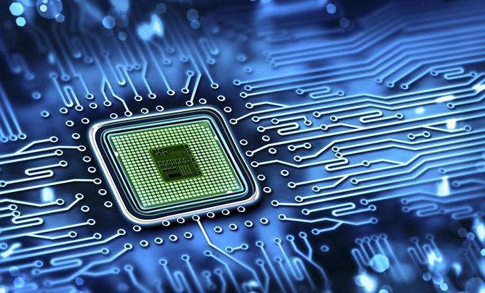

L'hardware è la componente fisica di un sistema informatico, ed è costituito da tutte le parti tangible che compongono un computer o un dispositivo elettronico.
Le principali categorie di hardware includono:
- CPU (Central Processing Unit): È il cervello del computer e esegue istruzioni di programma.
- RAM (Random Access Memory): È la memoria temporanea utilizzata per archiviare dati e istruzioni in modo che il processore possa accedervi rapidamente.
- Scheda madre: È la scheda principale che collega tutte le altre componenti hardware e fornisce la piattaforma per il funzionamento del computer.
- Unità di archiviazione: Include hard disk drive (HDD) o solid-state drive (SSD) per memorizzare dati permanenti.
- Scheda grafica (GPU): Gestisce la grafica e accelera i processi legati all'elaborazione delle immagini.
- Alimentatore: Fornisce energia elettrica al computer.
- Periferiche di input/output: Include tastiera, mouse, monitor, stampante e altri dispositivi che consentono all'utente di interagire con il computer.
- Unità ottiche: Come i lettori CD/DVD/Blu-ray.
- Interfacce di connessione: USB, HDMI, Ethernet, etc., che permettono la connessione di periferiche esterne.
L'hardware è fondamentale per il funzionamento di qualsiasi sistema informatico. Quando si parla di cosa faccia l'hardware, si intende il ruolo che ciascuna componente svolge nel processo di elaborazione dei dati. Ad esempio, la CPU esegue le istruzioni, la RAM fornisce spazio di archiviazione temporaneo, e le periferiche di input/output consentono all'utente di interagire con il sistema. In sintesi, l'hardware costituisce la base fisica e il motore di qualsiasi dispositivo elettronico o computer.
